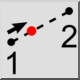
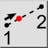
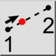
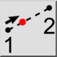

Distance manuellement
Barre d'outil / icône :
 

Menu : Accrochage > Distance manuellement
Raccourci : S, H
Commandes : snapdistancemanual | sh
Ceci est une traduction automatique.
Barre d'outil / icône :
 

Menu : Accrochage > Distance manuellement
Raccourci : S, H
Commandes : snapdistancemanual | sh
Cet outil vous permet d'accrocher à un point qui se trouve sur la ligne
imaginaire entre deux points à une distance donnée du premier point.
Cet outil d'enclenchement ne limite pas la distance, le pourcentage ou la
fraction entré. En entrant une distance supérieure à la distance entre les deux
points, un pourcentage supérieur à 100 ou une fraction supérieure à 1,0 vous
permettra de vous accrocher à un point au-delà du deuxième point.
Des valeurs négatives peuvent être entrées pour s'accrocher à des points
au-delà du premier point.
Les fractions peuvent être entrées sous forme de nombres décimaux (0,5,
0,7) ou de fractions (1/7, 3/11).